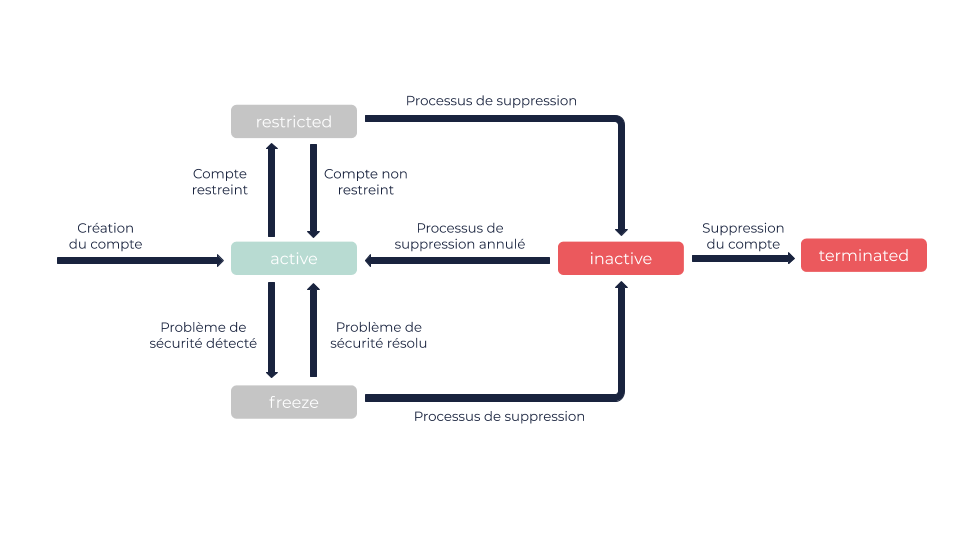

À propos de votre compte
Un compte vous permet de créer et de gérer des ressources dans le Cloud OUTSCALE.
Pour utiliser votre compte, différents outils sont disponibles en fonction de vos besoins et préférences. Pour en savoir plus, voir Outils du Cloud et Outils avancés du Cloud.
Informations générales
Création
Lorsque vous créez un compte, celui-ci est créé pour une Région spécifique du Cloud OUTSCALE. Si vous voulez créer et gérer des ressources dans d’autres Régions, vous devez y créer d’autres comptes. Pour en savoir plus sur les Régions, voir À propos des Régions et Sous-régions.
|
Par défaut, votre compte est créé pour la Région eu-west-2. Si vous avez besoin d’aide pour créer votre compte, ou si vous voulez le créer pour une autre Région, vous pouvez envoyer un e-mail à sales@outscale.com. |
Vous pouvez également demander que votre compte existant soit copié dans une autre Région. Pour cela, contactez votre Technical Account Manager, ou notre équipe Support à support@outscale.com.
|
Lorsqu’un compte est copié, seules les informations personnelles du compte sont copiées, pas ses ressources. Toutefois, vous pouvez exporter manuellement des images machines OUTSCALE (OMI) et snapshots d’une Région pour les importer dans une autre Région. Pour en savoir plus, voir Copier une OMI vers d’autres Régions et Tutoriel : Copier un snapshot dans une Région différente. |
Authentification
Votre compte possède plusieurs méthodes d’authentification en fonction des outils utilisés :
-
Un mot de passe, utilisé principalement pour les interfaces graphiques. Pour en savoir plus, voir À propos de la protection par mot de passe.
-
Des access keys, utilisées principalement pour les API et les interfaces en lignes de commande (CLI). Pour en savoir plus, voir À propos des access keys.
Pour en savoir plus, voir À propos de l’authentification.
Quotas de ressources et facturation
Des quotas pour la création et la consommation de ressources sont définis pour votre compte. Un paying account est facturé pour votre consommation. Ce paying account peut être votre propre compte ou un autre. Pour en savoir plus, voir Obtenir des informations sur votre compte et vos quotas et Facturation et consommation.
|
Pour augmenter vos quotas, vous pouvez envoyer une demande à notre équipe Support à support@outscale.com. |
Cycle de vie du compte
Un compte peut passer par plusieurs états. Selon l’état, certaines actions peuvent être indisponibles.

| État | Description | ||
|---|---|---|---|
|
L’état par défaut d’un compte. Dans cet état, vous pouvez utiliser l’API et les outils dérivés de l’API pour créer et gérer des ressources. |
||
|
Dans cet état, vous ne pouvez pas utiliser l’API et les outils dérivés de l’API. Toutefois, vous pouvez encore accéder à vos ressources existantes via Internet (par exemple, en vous connectant à vos VM). Après 5 jours, l’état du compte passe automatiquement à
|
||
|
Dans cet état, les VM de votre compte sont isolées.
|
||
|
Dans les 20 premières minutes de cet état, toutes les ressources de votre compte sont supprimées à l’exception de vos snapshots, volumes, et security groups par défaut. Après 90 jours, l’état du compte passe automatiquement à
|
||
|
L’état d’un compte supprimé. Toutes les ressources de stockage de votre compte sont supprimées, sans possibilité de les récupérer. |
Pages connexes
Méthodes API correspondantes